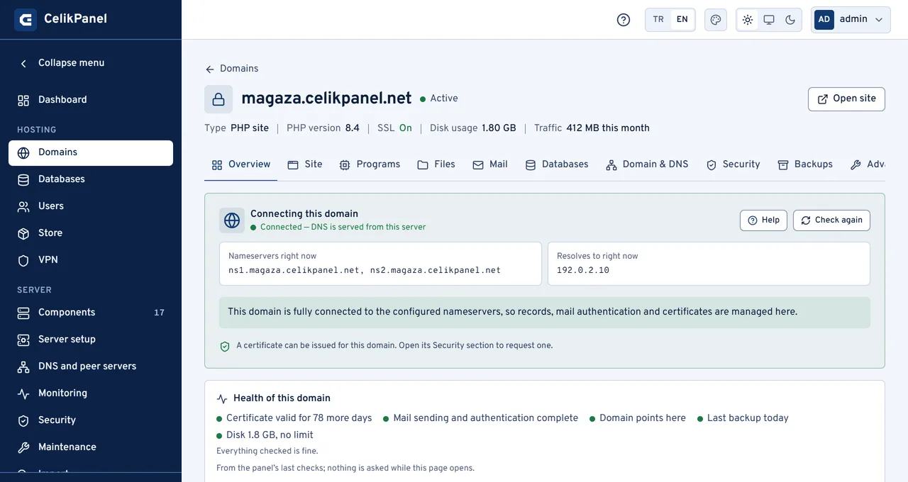
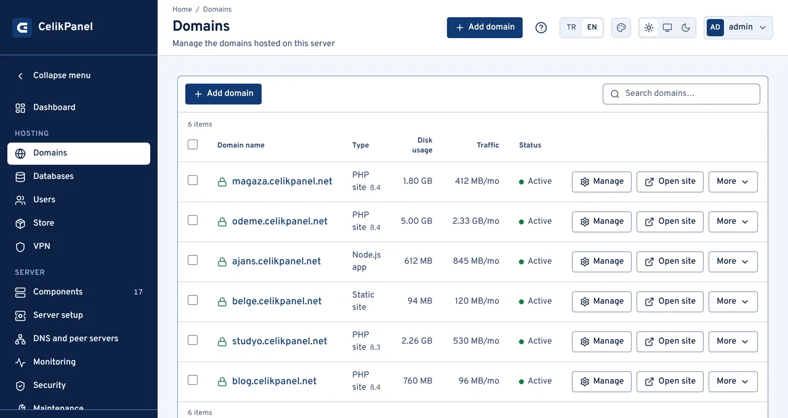
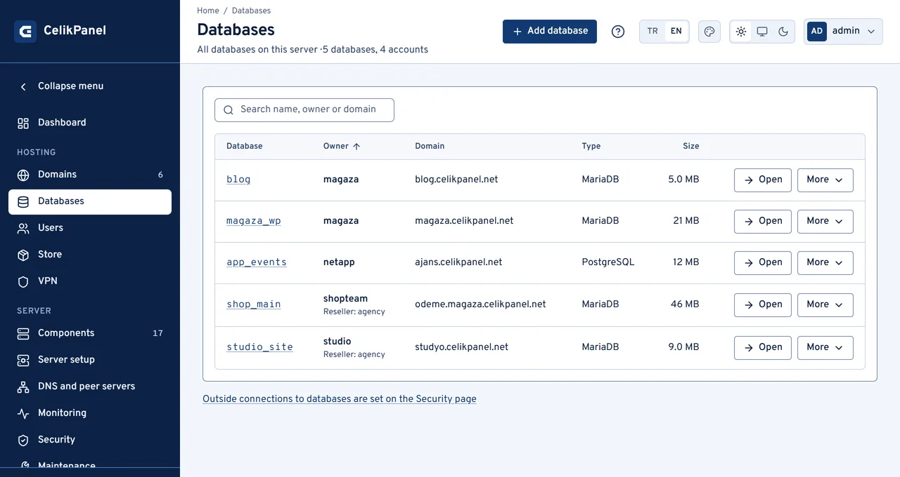

A hosting control panel for Linux servers
It manages websites, mail, DNS, databases and backups with the server’s own services, so sites, mail, DNS and databases keep running when the panel stops.
- Systems
- Debian 13, Ubuntu 24.04 (tried on every release candidate)
Debian 12, Ubuntu 22.04 (supported)
Arch Linux (development level, not tried on every release)
amd64 - Web
- Nginx; PHP-FPM with the PHP version chosen per site; static sites; Node.js and Python apps (optional)
- Postfix, Dovecot, Rspamd; Roundcube webmail
- DNS
- BIND or PowerDNS on this server, or an outside provider; a second server with a copy of the DNS is optional
- Databases
- MariaDB, PostgreSQL
- Backups
- Site backups by hand or on a schedule, kept on the server; a remote copy (S3-compatible storage or SFTP) is optional
- Users
- Administrator, reseller, customer and a customer’s team members; plans with limits
- Licence
- Per server, per year. Free until version 1.0; 99 USD from version 1.0
- Release
- @@CP_RELEASE_VERSION@@, ; signed with Ed25519
- Status
- Alpha: for test servers; not ready for production

Screens
The panel’s own screens, unedited.


Install and systems
One command on a clean server. Go, Node.js or Git are not needed.
| Step | What to do | Where |
|---|---|---|
| 1 | Create an account and take a licence for the server | celikpanel.net |
| 2 | Prepare a clean server with a supported system | Your server provider |
| 3 | Run the install command; the installer checks the release’s signature and SHA-256 before it installs anything | The server’s root terminal |
| 4 | Sign in at the address the installer shows and enter your licence key; the setup wizard then asks for your domain and where DNS lives | The panel, in a browser |
Install command
timedatectl set-ntp true
curl -fL --proto '=https' -o celikpanel-install.sh https://celikpanel.net/get.sh &&
sh celikpanel-install.shRun the three lines together in the server’s root terminal. The first line turns on clock synchronisation.
| System | Status | Patched by the distribution until | System updates |
|---|---|---|---|
| Debian 13 trixie | Tested | 2030-06-30 | Automatic or by hand, your choice |
| Ubuntu 24.04 LTS noble | Tested | 2029-05 | Automatic or by hand, your choice |
| Debian 12 bookworm | Supported | 2028-06-30 | Automatic or by hand, your choice |
| Ubuntu 22.04 LTS jammy | Supported | 2027-05 | Automatic or by hand, your choice |
| Arch Linux rolling release | Development level | No end date | By hand, as a full upgrade |
Tested: every release candidate is run on it before it is published. Supported: CelikPanel installs and runs on it; release candidates are not run on it. Development level (Arch Linux): CelikPanel is built for it and runs on it as it is today, but release candidates are not tried on it and a rolling update can change what works. Debian dates include Debian LTS; Ubuntu dates are standard support, without ESM. The release package is built for amd64.
Separation between customers
What keeps one account from reaching another, and what it does not cover.
| Measure | Status | Since |
|---|---|---|
| Each site has its own system account, and its PHP runs as that account | Yes | alpha.82 or earlier |
| Node.js sites, Python apps and uploaded programs (optional programs) run in a sandbox under the site’s own account; existing Node.js sites move in when the administrator moves them | Yes | alpha.127 |
| Extra FTP and SFTP logins see one folder of their site and never a command line | Yes | alpha.128 |
| No customer or reseller can take another account’s domain name or site account, or a port of the server’s own services (names that overlapped before alpha.142 are listed for the administrator) | Yes | alpha.142 |
| A link in a site’s folder does not serve another account’s files | Yes | alpha.142 |
| SQL from a backup, a copy or an import runs with the database owner’s rights, not the administrator’s | Yes | alpha.141 |
| PostgreSQL databases are closed to other accounts: new ones from the start; older ones by the panel after a day in which no other account was seen using them, otherwise when the administrator closes them on the PostgreSQL page | Yes | alpha.143 |
| Outgoing mail is signed only for the sender’s own domain (except on Arch Linux, whose OpenDKIM cannot tie signing to the login) | Yes, except Arch Linux | alpha.143 |
| Webmail’s local door on the server answers only CelikPanel’s own checks, not other accounts asking for Roundcube’s files | Yes | alpha.145 |
| phpMyAdmin, phpPgAdmin and webmail run under their own system accounts, not as the web server’s account, which can read every site (webmail needs a file system with access-control lists; without them it stays on the web server’s account and the panel says so) | Yes | alpha.147 |
| Site accounts cannot schedule jobs with at (an at.allow the owner wrote is kept, and the site accounts it names are shown to the administrator); crontab lines added outside the panel are marked for the administrator | Yes | alpha.147 |
| The distribution’s shared PHP pool, which runs as the web server’s account, is turned off where nothing uses it | Yes | alpha.147 |
| A site’s programs (the Node.js application, Python apps, uploaded programs, service apps and their install, build and deploy steps) share one memory, process and processor limit; the site’s PHP keeps its own limits and its scheduled tasks are not inside it; programs that ran before join it when the administrator moves the site | Yes | alpha.148 |
| Outgoing mail limits per mailbox, domain and hosting account (optional; off until the administrator turns them on) | Optional | alpha.128 |
| PHP and scheduled tasks in the site’s own sandbox | No | — |
| Processor and memory limits for a whole hosting account, its sites’ PHP and scheduled tasks included (today: each site’s programs have limits of their own; PHP has memory, run time and process count per site) | No | — |
| Hiding which other sites exist: account names and processes are still visible to a site account | No | — |
| Each site with its own web-server group (today the web server’s group can read every site’s folder; the link rule is the barrier) | No | — |
| Mail address lists hidden from other accounts | No | — |
| Moving a database to another PostgreSQL version with the owner’s rights (today: the administrator’s) | No | — |
No: not in the current release.
When the panel stops
The services are the system’s own; CelikPanel manages them.
Keeps running
- Websites and Node.js apps
- Mail and webmail
- DNS, including the copy on an optional backup DNS server
- Databases
- Scheduled tasks
- Renewal of site certificates, by the system’s own certbot timer
Still needs the panel
- Renewing the panel’s and the mail server’s own certificates
- Site certificates from older releases, until they are issued again
- Restoring the firewall at boot
- Sending scheduled remote backups (an optional feature)
- Monitoring alerts
Removing CelikPanel from a server is not supported. Running the server without the panel
Measurements
Measured on real machines under the condition shown. They describe those tests, not a guarantee for every server.
| Measurement | Value | Condition | Date |
|---|---|---|---|
| From a dead server to the panel serving again (DNS answered 15 s later) | 105 s | The first server was stopped by a power cut; a new machine was provisioned and restored from one sealed archive | 2026-09-05 |
| Archive age at the cut, data lost | 40.9 s · 0 | Nothing was written in that window, so nothing was lost | 2026-09-05 |
| Queries unanswered while taking over a running BIND | 0 / 2508 | A hand-installed BIND answering its own zone on Debian 13, adopted through the panel | 2026-09-04 |
| Time to settle unfinished work after a power cut | ≤ 7 s | Four power cuts on a real virtual machine; each time the work was finished or rolled back with nobody touching it | 2026-09-04 |
The conditions and the open risks are recorded in the repository. Risk register
Licence
One licence per server. Accounts, domains and sites are not counted.
| Item | Today, alpha | From version 1.0 |
|---|---|---|
| Price | Free | 99 USD per server per year |
| Term | One year from creation; renewed free from your account | One year; your price does not rise while you renew before the end date |
| If celikpanel.net cannot be reached | Management stays open for up to 7 days | The panel keeps working for up to 30 days |
| When a licence ends | The panel’s screens close until it is renewed; sites, mail, DNS and databases keep running | As today, with reminders 30, 7 and 1 day before the end date |
| Trial | — | 30 days the first time, without a card |
| Payment | None | By card, through Stripe |
Release and limits
Only the owner updates an installed panel, from the panel’s own update screen.
Current release: @@CP_RELEASE_VERSION@@,
Signed with Ed25519. Its notes name the release commit, what was tried in the lab, what was not, and the known limits.
If an update fails after it has replaced the installed version, the panel puts back the previous version and its database by itself (changes made in the panel after the update are lost); if it stops earlier, nothing was changed. The update screen says which happened.
Not included
- Apache and Exim: CelikPanel uses Nginx and Postfix
- A whole-server backup in the panel: use your provider’s snapshots for the system
- Removing the panel from a server
- Processor and memory limits per account
- Processors other than amd64